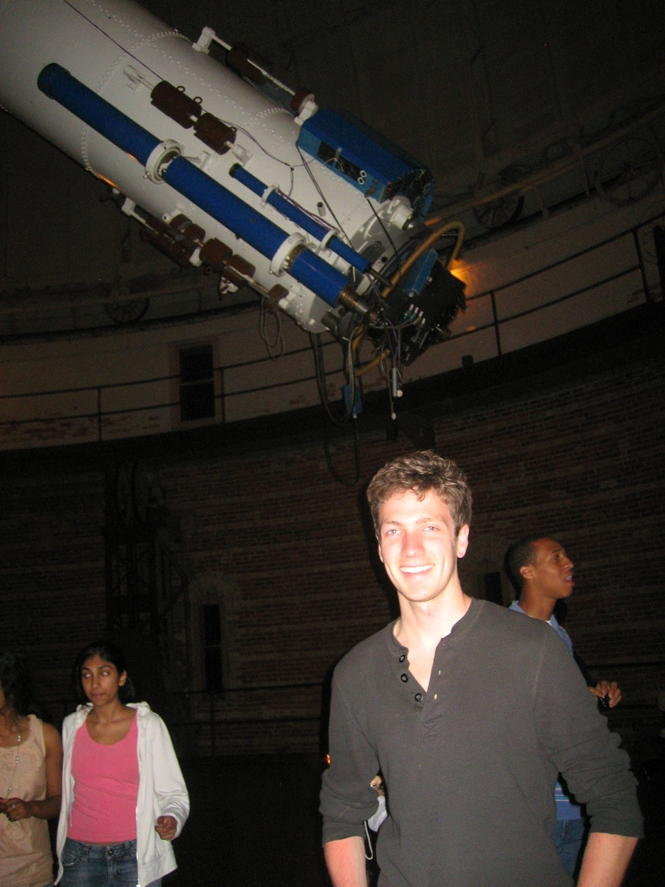
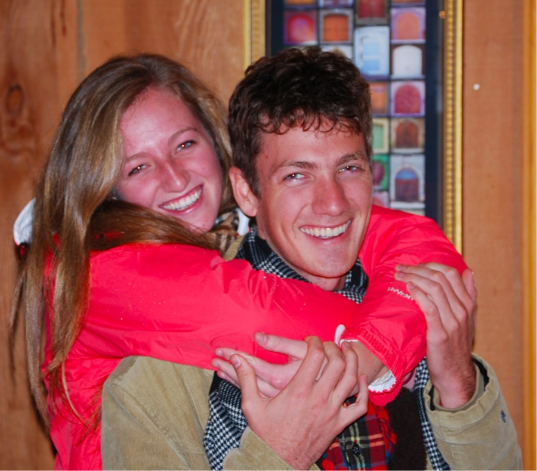
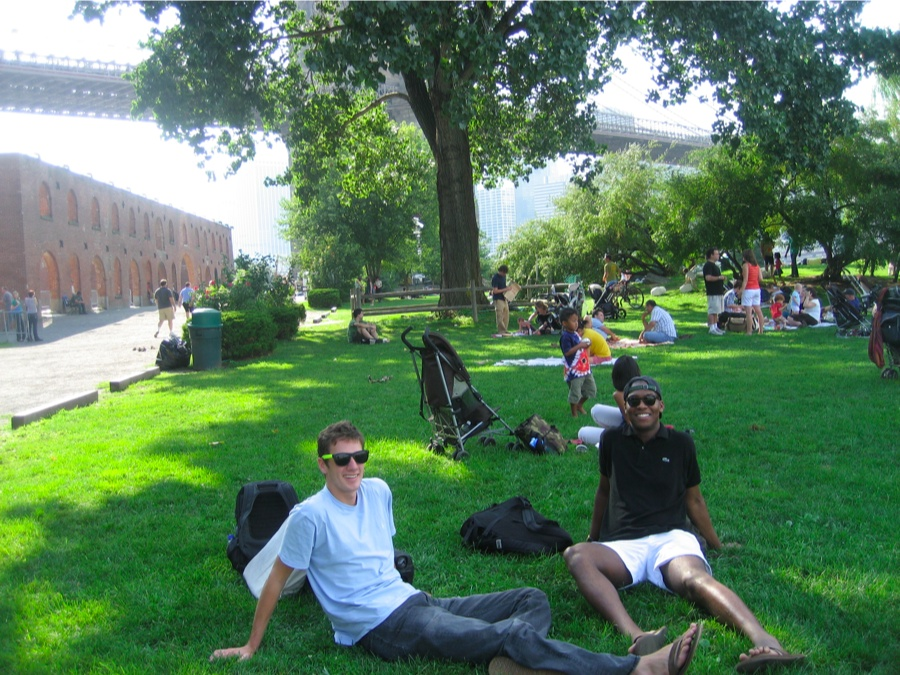
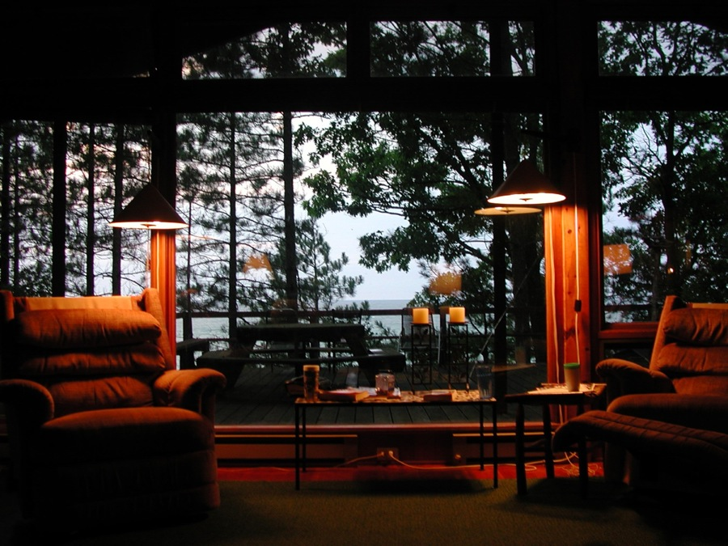
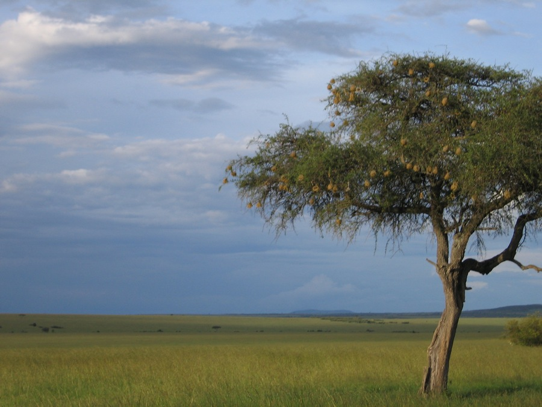
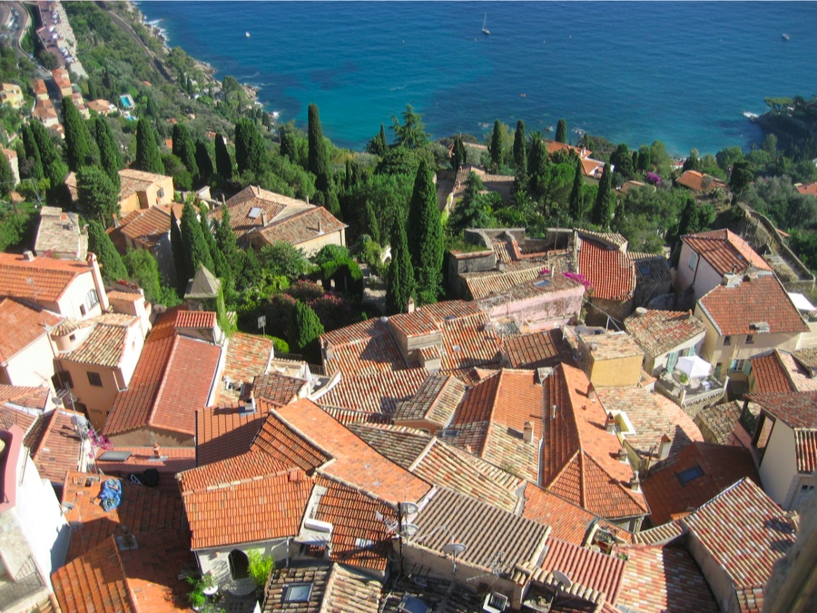
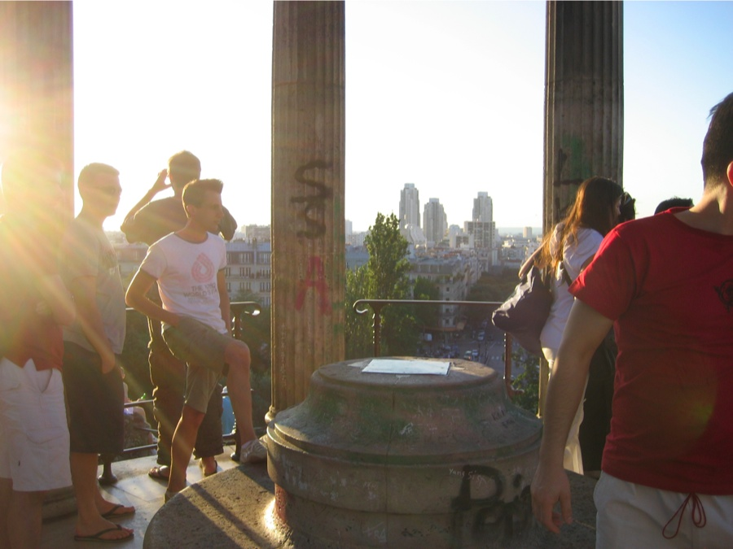
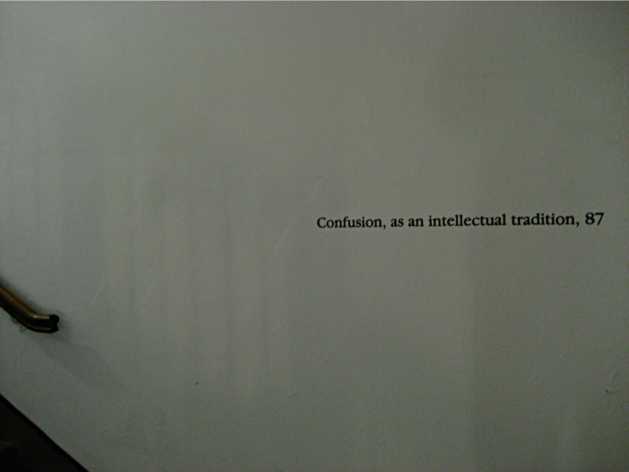

University of Chicago graduation. 2010.
Visiting U of C's Yerkes Telescope in Williams Bay. 2010.

Visiting the San Francisco area with my sister. 2010.

An afternoon with James in Brooklyn. 2009

Alone in the forest room. 2005.

Former Maasai lands, Kenya. 2006.

Apocalyptic Sunset, Montana. 2007.
Sailing with no land in sight, off the coast of CA. 2009.
The joy of sleeping on park benches, Roquebrune, France. 2007.

A popular hang-out spot, Paris, France. 2007.

A wall in Harper Library, University of Chicago, before it was painted over. 2006.
